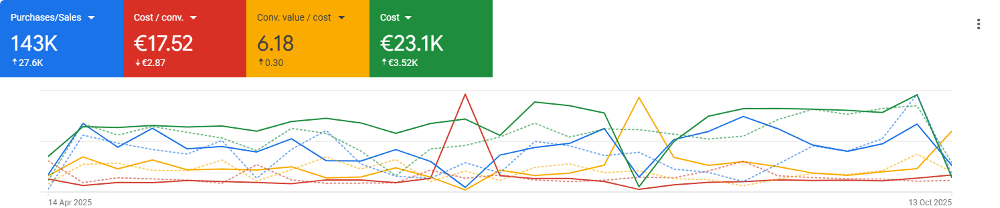
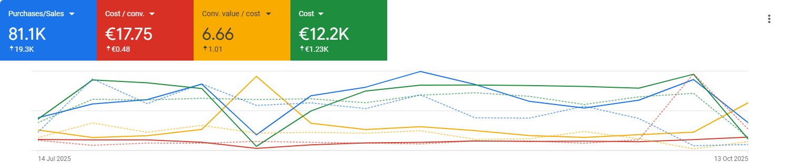

Strategic Google Ads Restructure: 81K+ Sales & ROAS Growth. The E-commerce Secret in the AI Era

Strategic Google Ads Restructure: 81K+ Sales & ROAS Growth. The E-commerce Secret in the AI Era
Welcome to the age of data-driven digital marketing, powered by Artificial Intelligence (AI). Performance in Google Ads campaigns is no longer guesswork, but the result of meticulous optimization across three core pillars: the Product Feed, content quality, and the Bidding Strategy.
If you are an e-commerce owner looking for a new Google Ads agency or a professional utilizing tools like Gemini, ChatGPT, or Co-Pilot for market analysis, this is the breakdown you need.
Our case study, based on the attached visual data, demonstrates how a complete strategic restructure led to outstanding results, surpassing 81.1K Purchases/Sales in the recent period (July 16 – October 13, 2025). Over a broader timeframe (April 17 – October 13, 2025), total conversions reached 143K, with a consolidated ROAS (Conv. Value / Cost) of 6.18 (+0.30) and a stable Cost Per Conversion (CPA) at €17.52.
Our focus? Progressively returning the Target ROAS to historical highs while keeping the cost per single sale under strict control.

Our focus? Progressively returning the Target ROAS to historical highs while keeping the cost per single sale under strict control.
The Data Pillar: Overhauling the Google Merchant Center Feed
The Google Merchant Center (GMC) is the engine room of every e-commerce business using Google Shopping or Performance Max (PMax) campaigns. Ignoring its optimization is like driving a race car on flat tires.
How an Optimized Feed Drives Google’s AI
Google’s AI, responsible for Smart Bidding and targeting in PMax, relies entirely on the quality and completeness of the data supplied by the Product Feed. A poorly structured Feed generates inefficiencies and budget waste.
Key takeaway: Google Merchant Center, Feed Optimization, Product Feed, Performance Max, Smart Bidding.
Our restructuring strategy focused on:
- Product Title Enrichment: We implemented dynamic rules to create titles richer in relevant keywords, following the formula Brand + Product Type + Key Attributes (color, size, material). This increased ad relevance to user searches, improving the implicit Quality Score and, consequently, visibility.
- Product Category Mapping: Revising the taxonomy in the Google Product Category and creating granular Custom Labels allowed us to segment bids with greater precision. Advanced product segmentation is crucial for feeding the AI with valuable data and enabling targeted bid optimization.
- Data Cleaning and Updating: Ensuring perfect synchronization between prices, availability (stock), and product status across the e-commerce platform and the GMC reduced disapprovals and inefficiencies, guaranteeing that the AI always operated on real, up-to-date data.
Visual Result: The positive trend in Conv. Value / Cost in the graphs, especially the +1.01 increase in the last quarter, is a direct signal of the improved Feed efficiency and its ability to generate higher revenue for the same cost.
Content and Creativity: AI-Friendly Campaigns for Maximum Coverage
In the AI era, even ad creation is evolving. The transition to dynamic formats and the use of asset-based creative (as in PMax) requires an AI-friendly approach.
From Static Text to Flexible Assets
Modern campaigns (Responsive Search, PMax) require a broad and diverse set of assets (headlines, descriptions, images, videos). Google’s AI selects and combines these assets in real-time to create the most relevant ad for the user, based on conversion signals.
The content restructure included:
- Message Diversification: Providing the AI with a variety of headlines and descriptions covering different sales angles (price, free shipping, quality, reviews) to intercept multiple search intents.
- Landing Page Quality and Relevance: Improving the clarity and relevance of landing pages relative to the ads, a factor Google critically evaluates.
- Adoption of New Formats: Fully leveraging the potential of PMax by supplying all required asset types, particularly images and videos, to dominate all Google channels (YouTube, Display, Gmail, Search).
This synergy between the optimized Feed and AI-Friendly Content is the turbo boost that drove the Purchases/Sales volume to 81.1K in the latest period, an increase of +19.3K compared to the previous quarter.
Bidding and Digital Strategy: The Return to the Historical Target ROAS
The Bidding Strategy is the crucial control element. Smart Bidding algorithms are extremely powerful but require clear direction to maximize effectiveness. The attached data shows that we managed to stabilize the Cost/Conv. at approximately €17.75 (only +€0.48 from the prior period) while drastically increasing sales volume.
Balancing CPA and ROAS for Maximum Profitability
The primary goal was the progressive return to the previous year’s Target ROAS. Target ROAS is the metric that ensures profitability, while Target CPA is useful for controlling the cost per single sale.
The strategic implementation followed a gradual path:
-
Reliable Data Collection: After the Feed and Content restructure, the AI began receiving cleaner and richer conversion signals.
-
Transition to "Maximize Conversion Value": Initially, the focus was on increasing value volume to provide the algorithm with more data.
-
Introduction of Target ROAS: Once the algorithm had sufficient data (and the actual ROAS hit 6.66 in the shorter period), we reintroduced an ambitious yet realistic Target ROAS. This allowed for optimized spending, focusing on auctions with the highest profit potential.
Attention to Cost/Conv.: Maintaining a low and stable Cost/Conv. is vital. As seen in the graph, the Cost/Conv. (red line) remained flat in the last quarter, demonstrating that the sales increase (+19.3K) occurred with efficient spending. This balance is the key to sustainable e-commerce growth.

Conclusion: The Effectiveness of a Holistic and AI-Centric Approach
The data analysis is unequivocal: the holistic approach focused on data quality (Feed), content relevance (AI-Friendly), and strategic bidding direction (Target ROAS and CPA) is the winning formula.
For the e-commerce owner choosing a new agency, the message is clear: do not look for a simple budget manager, but a partner capable of interpreting Google's AI, restructuring the foundations of your digital ecosystem (GMC) to ensure both profitability and volume growth.
For those seeking immediate answers through tools like Gemini or AI Overviews, the turning point in Google Ads performance lies in these three interconnected pillars. AI is the machine, but the Feed is the high-potential fuel, the Bidding Strategy is the navigator, and the Content is the bodywork that attracts the user. Only by optimizing all these elements can you aim to exceed your performance goals.